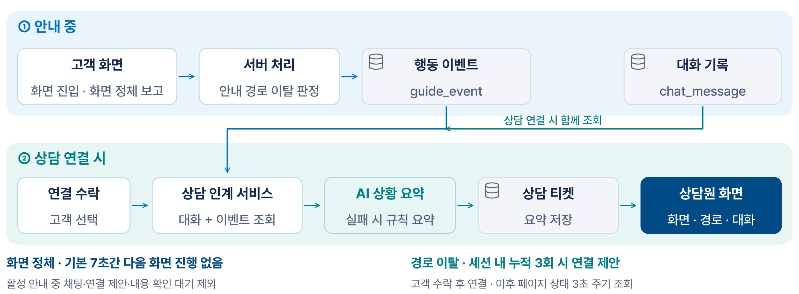
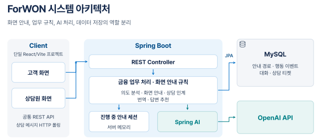
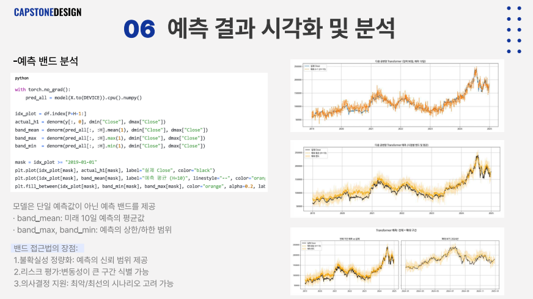
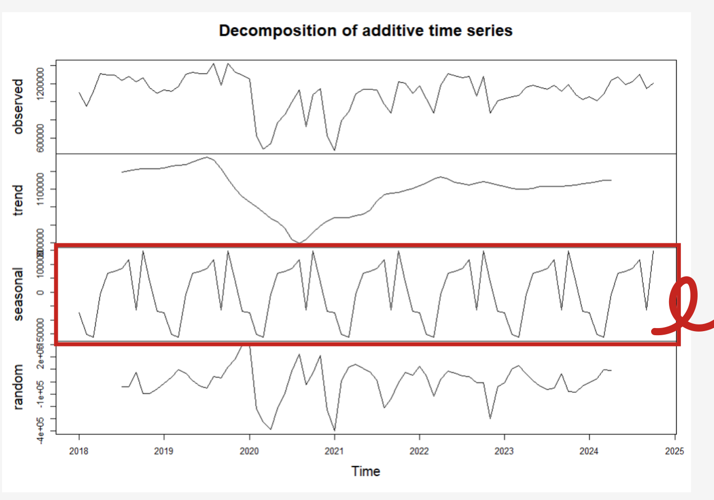
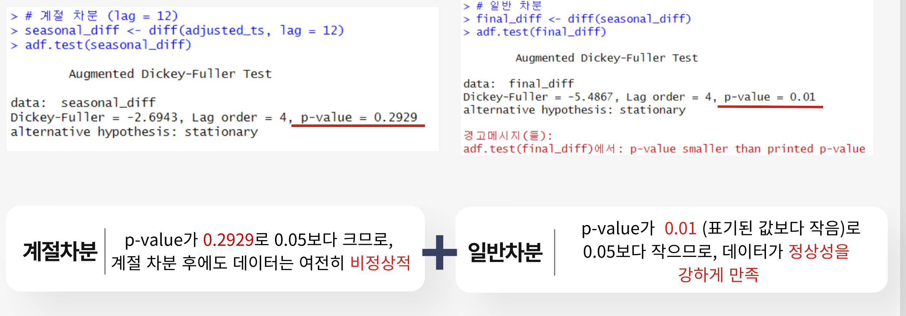
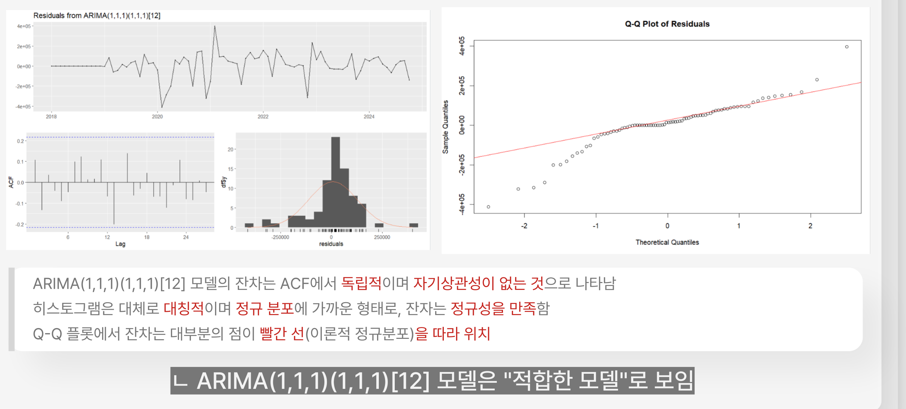
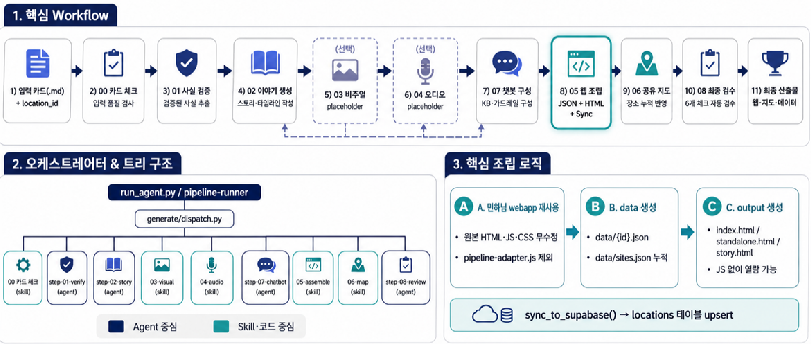
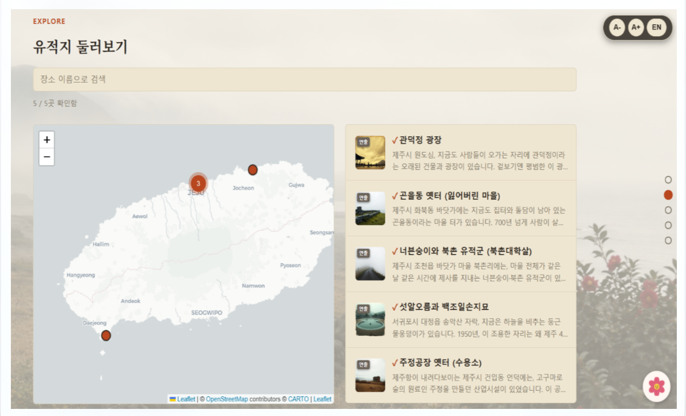
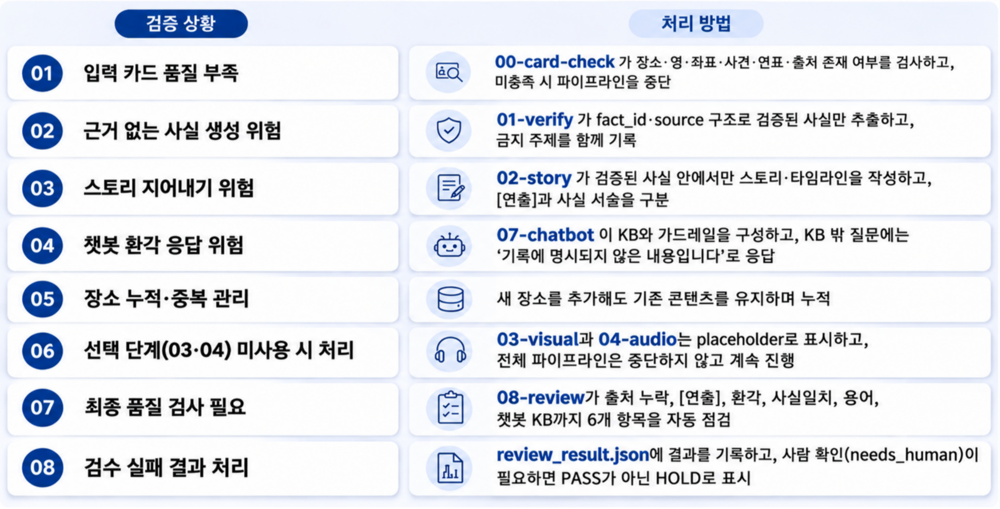

팀 프로젝트를 통해 문제를 정의하고, 협업을 바탕으로 해결 방안을 구체화하는 경험을 쌓았습니다. 데이터 분석 과정에서는 수치 이면의 의미를 파악하고, 인사이트를 도출하는 역량을 길렀습니다. 앞으로는 데이터를 기반으로 문제의 원인을 발견하고, 더 나은 의사결정을 이끄는 데이터 분석가로 성장하고자 합니다.
EDUCATION
제주대학교 전산통계학과 졸업우리WON 청년IT아카데미 1기 (진행 중)제주대학교 × UPSTAGE AI 중급 부트캠프
고객이 모국어로 질문하면 LLM이 업무 의도를 분류하고, 미리 정의해 둔 경로를 조회해 화면의 버튼을 하이라이트합니다. 고객은 강조된 버튼을 직접 눌러 진행합니다.
질문부터 상담까지 하나의 흐름
막힘 감지에서 상담 연결까지
서버는 화면 진입과 정체를 기록하다가, 아래 기준에 걸리면 고객에게 상담 연결을 제안합니다.
감지 항목
기준
의미
화면 정체
기본 7초 동안 다음 화면 없음
어디를 눌러야 할지 몰라 멈춘 상태
경로 이탈
세션 내 3회 누적
안내 경로에서 반복해서 벗어난 상태
고객이 수락하면 대화와 행동 기록을 AI가 요약해 상담원에게 넘기고, 상담원은 고객이 막힌 화면을 읽기 전용으로 확인합니다. AI 요약이 실패하면 규칙 기반 요약으로 대체해 상담 연결이 끊기지 않게 했습니다.
Project 01 · ForWON 이어서
상담 연결 시 넘어가는 맥락

안내 중에는 화면 이벤트와 대화를 기록하고, 연결을 수락하면 둘을 함께 조회해 AI 요약 후 상담 티켓으로 저장해 상담원 화면에 전달
AI와 규칙의 역할 분담

시스템 아키텍처: 화면 안내, 업무 규칙, AI 처리, 데이터 저장을 분리
AI
고객이 무엇을 원하는지 이해, 대화·행동 기록 요약
규칙
어느 화면으로 안내할지 결정, 정체·이탈 감지, 요약 실패 시 대체 요약
AI가 틀리더라도 안내 경로는 통제할 수 있게 하려는 구조입니다.
배운 점
단순 챗봇을 넘어 실시간 화면 안내와 상담 티켓 요약 기능을 구현하며, 체계적인 데이터 스키마가 실제 서비스 UX 개선과 상담 효율화로 이어지는 과정을 경험했습니다.
한계와 개선 방향
한계 직접 확인한 결과, "I want to make a card"는 정상 동작했지만 같은 뜻의 "I wanna make a card"는 챗봇이 읽지 못했습니다. 축약형·구어체 표현에서 의도 분류가 흔들립니다. 그 밖의 구어체나 다른 언어는 확인하지 못했습니다.
개선안 축약형·구어체 변형 문장을 모아 시험 문장 세트를 만들고, 같은 뜻의 문장이 모두 같은 업무로 분류되면 개선된 것으로 판단합니다.
Project 02 · 4인 팀 · 2025.03 ~ 2025.06
SK하이닉스 주가 예측: Transformer 기반 시계열 모델
복잡한 주가 흐름을 예측하고, 그 근거까지 해석한 프로젝트
인원4인 팀
내 담당데이터 엔지니어링 · 전처리
상태모델 학습·검증·해석 완료
※ 팀 프로젝트의 결과를 정리한 페이지이며, 제가 직접 맡은 부분은 위 '내 담당' 칸에 적었습니다.
PythonPyTorchTransformerFFT 주기성SHAP · LIME
문제의식
주가는 비선형이고 비정상적이라 기존 통계·머신러닝 모델로는 예측이 어렵습니다. 그래서 시계열 분해 + FFT 주기성 분석 + Transformer를 결합한 모델을 만들고, 예측값에 그치지 않고 왜 그렇게 예측했는지 설명할 수 있도록 해석 기법까지 붙이는 것을 목표로 했습니다.
데이터와 입력 구성
항목
내용
입력 변수
SK하이닉스 종가, 거래량, KOSPI 지수, 환율
전처리
변수별 정규화 후 90일 단위로 묶어 입력
모델 구조
입력90일 윈도우 (4개 변수)
시계열 분해이동평균으로 추세와 계절성 분리
포지셔널 인코딩시간 순서 정보 부여
인코더멀티헤드 셀프어텐션
출력예측 평균과 예측 밴드
학습과 검증
항목
설정
이유 / 의도
학습
AMP 혼합정밀도, AdamW (학습률 3e-4)
학습 속도와 메모리 효율
검증
Walk-Forward 검증 (5개 fold)
시간 순서를 지켜 미래 정보 누수와 과적합 점검
결과 표현
예측 평균 + 밴드, 실제 종가와 비교
밴드는 볼린저 밴드의 개념을 빌려 해석

실제 종가와 Transformer 예측 평균·예측 밴드 비교
해석: SHAP으로 본 예측 근거
예측 시점에서 약 90일 전 데이터의 영향이 가장 크고, 시점이 가까워질수록 영향이 줄었습니다.
종가, 거래량, KOSPI, 환율이 고르게 기여했고, 그중 종가의 영향이 조금 더 컸습니다.
배운 점
단일 주가 데이터의 노이즈 한계를 보완하기 위해 거시경제 및 업종 지수 데이터를 결합하면서, 모델 구조만큼이나 도메인을 반영한 변수 선택과 전처리가 예측 성능을 좌우한다는 점을 배웠습니다.
한계와 개선 방향
한계 코로나19 같은 예외적 사건에는 약하고, 어텐션 패턴을 해석하기 어렵습니다.
개선안 글로벌 반도체 지수나 원자재 가격 같은 변수를 추가하고, 여러 모델을 앙상블합니다.
Project 03 · 개인 프로젝트 · 2024.11 ~ 2024.12
제주 관광객 수요 예측: 시계열 분석으로 12개월 앞을 보다
제주특별자치도관광협회 월별 입도현황(2018~2024)으로 2025년 12개월 수요를 예측
인원개인 (1인)
내 담당데이터 탐색부터 예측까지 분석 전 과정
상태12개월 예측 완료 · 검정 재확인 예정
R시계열 분해ADF 검정ACF · PACFSARIMA생성형 AI 활용
8.46%MAPE (예측 오차)
(1,1,1)(1,1,1)[12]최종 선정 모델
1856.87AIC
1단계 · 데이터 탐색: 시계열 분해

시계열 분해 결과. 붉은 박스가 매년 반복되는 계절 성분
계절성: 매년 7~8월과 4월에 방문객이 늘어납니다.
충격과 회복: 2020~2021년 코로나로 크게 줄었다가 회복해, 2023~2024년에는 이전 수준에 가까워졌습니다.
2단계 · 정상성 검정: ADF 검정을 단계별로
처리 단계
p-value
정상성
계절조정 데이터
0.33
비정상
계절 차분
0.29
비정상
계절 차분 + 일반 차분
0.01
정상 (만족)
계절 차분만으로는 비정상성이 남아, 일반 차분까지 더해야 정상성이 확보된다고 판단했습니다. 그래서 모델의 차분 차수를 비계절·계절 모두 1로 두었습니다.

R의 ADF 검정 출력. 계절 차분 후 p-value 0.2929(비정상), 일반 차분까지 더한 뒤 p-value 0.01(정상)
3단계 · 차수 결정과 진단
ACF · PACFlag 1과 lag 12가 유의
차수 확정비계절·계절 구성요소를 모두 (1,1,1)로 결정
잔차 진단자기상관 없음, 정규분포에 가까움
예측2025년 12개월
Project 03 · 제주 관광객 수요 예측 이어서
잔차 진단: 선정한 모델이 적합한지 확인

SARIMA(1,1,1)(1,1,1)[12] 잔차. ACF에서 자기상관이 없고, 히스토그램과 Q-Q 플롯이 정규분포에 가까움
생성형 AI를 쓴 방식: 제안받고, 검증하고, 비교하기
파라미터를 정할 때 생성형 AI의 제안을 받았지만, 그래프 해석만으로 나온 조합은 계절성을 충분히 반영하지 못했습니다. 그대로 쓰지 않고 위의 ADF 검정으로 직접 확인해 일반 차분이 더 필요하다고 판단했습니다. 이후 AI가 제안한 SARIMA 구조를 바탕으로 구성요소를 바꿔 가며 여러 조합을 비교했고, 최종 모델을 선정했습니다.
2025년 12개월 예측 결과. 급격한 변화 없이 안정적으로 유지될 것으로 예상
배운 점
AI의 제안은 통계 검정으로 다시 확인한 뒤에 썼고, 그래서 어떤 결과를 왜 믿는지 설명할 수 있었습니다. 다만 발표 전까지는 몰랐던 실수가 있었습니다. 이미 계절성을 제거한 계절조정 데이터에 계절 차분을 또 적용해 계절성을 이중으로 제거한 것입니다. 이 일로 검정 결과를 해석하기 전에 데이터가 이미 어떤 처리를 거쳤는지부터 확인해야 한다는 것을 배웠습니다.
한계와 개선 방향
한계 계절성을 이미 제거한 데이터로 2단계 검정을 해서, 계절 차분이 필요하다는 판단과 차분 차수를 확신할 수 없습니다. 이 실수가 최종 모델과 MAPE에 준 영향은 확인하지 못했습니다. 방문객 수만 쓰는 단변량 모델이라 외부 요인도 반영하지 못합니다.
개선안 계절성을 제거하지 않은 원자료로 ADF 검정을 다시 해 차분 차수를 새로 정하고, 같은 데이터에서 MAPE 8.46%와 비교합니다. 이후 다변량 모델과 머신러닝을 적용해 MAPE가 더 낮아지면 개선된 것으로 판단합니다.
Project 04 · 2인 팀 · 2026.08
제주 4·3 기록을 스토리 웹페이지로: AI 워크플로우 구축
함께공 × 제주대학교 AI융합원 부트캠프 · 기업 수요 과제 (제주 4·3 스토리 웹페이지 생성 AI 에이전트)
인원2인 팀
내 담당에이전트·스킬·오케스트레이터 설계 · 웹 연동·검증
상태웹 반영까지 구현 · 이미지·오디오 자동화 예정
※ 팀 프로젝트의 결과를 정리한 페이지이며, 제가 직접 맡은 부분은 위 '내 담당' 칸에 적었습니다.
AI 에이전트스킬 설계오케스트레이션WebSearch · WebFetchSupabase (RLS)Leaflet 지도HTML · CSS
대상과 문제: 4·3 기록을 웹페이지로 만드는 제작 담당자
시스템 간 데이터가 이어지지 않아 수작업 입력과 검증이 반복됩니다.
담당자 개인에게 의존하다 보니 누락·오입력이 생기고, 오류를 실시간으로 파악하기 어렵습니다.
해결: 스킬을 부여한 에이전트를 오케스트레이션으로 연결

핵심 workflow(위)와 오케스트레이터·스킬 트리 구조(아래 왼쪽). 오케스트레이터가 각 에이전트와 스킬을 순서대로 호출
사건 카드 한 장에서 웹페이지 반영까지를 한 번에 돌리기 위해, 단계별 스킬을 만들어 에이전트에 부여하고 이를 순서대로 호출하는 오케스트레이터를 직접 구성했습니다.
구분
이름
역할
스킬
00-card-check
장소·연표·출처 등 입력 카드 품질을 검사하고, 미충족 시 파이프라인 중단
에이전트
01-verify
fact_id·source 구조로 검증된 사실만 추출
에이전트
02-story
검증된 사실 안에서만 스토리·타임라인 작성, [연출]과 사실 서술을 구분
스킬(선택)
03-visual · 04-audio
이미지·오디오는 placeholder로 표시하고 파이프라인은 계속 진행
에이전트
07-chatbot
KB와 가드레일을 구성, KB 밖 질문에는 "기록에 명시되지 않은 내용입니다"로 응답
스킬
05-assemble · 06-map
JSON + HTML로 웹페이지를 조립하고 장소를 공유 지도에 누적 반영
에이전트
08-review
출처 누락·환각·사실 일치 등 6개 항목을 자동 점검, 이상 시 HOLD 표시
Project 04 · 제주 4·3 AI 워크플로우 이어서
결과물: 지도·타임라인·갤러리·추모 페이지

유적지 지도 클러스터링과 장소 목록 연동
지도: 겹치는 마커를 숫자로 묶고, 확대하면 다시 분리
타임라인: 연도 노드에 마우스를 올리면 사건 요약 카드 표시
진실·미디어 갤러리: 카테고리별 탐색, 3열 그리드 카드
추모의 글: 입력한 메시지를 Supabase에 실시간 저장
접근성: 글자 크기 조절(A-, A+)과 영문(EN) 전환
검증: 정보가 부족한 카드로 예외 처리 시험
0%크래시·멈춤 오류
3회Bounded Search 호출
100%유사 사건 오인 채택 차단
확인 조건: 섹션 3개만 있고 출처가 없는 카드를 입력해 에이전트를 실행했습니다. 미확인: 다양한 장소의 카드와 실제 운영 데이터로는 아직 시험하지 않았습니다.
방어적 파싱: 섹션이 3개뿐이고 출처가 없어도 오류 없이 나머지 필드를 채워 생성
지어내기 방지: 이름이 비슷한 다른 사건이 검색돼도 관련성을 검증해 걸러냄

검증 상황별 처리 방법. 입력 품질 부족, 근거 없는 사실, 지어내기, 환각 응답 등을 단계별 스킬이 막고, 검수 결과는 review_result.json에 기록
배운 점
에이전트 시스템을 처음 직접 구축해 보면서, 하나의 거대한 프롬프트에 의존하기보다 역할별로 에이전트(8개 스킬)를 세분화해 모듈화할 때 복잡한 비정형 데이터도 안정적으로 처리할 수 있음을 배웠습니다.
한계와 개선 방향
한계 이미지·오디오는 아직 자동으로 생성하지 못해, 웹 반영까지 자동으로 이어지지 않습니다.
개선안 이미지·오디오 생성부터 웹 반영까지 자동화하고, 다양한 장소·예외 카드로 반복 테스트해 안정성을 확인합니다.